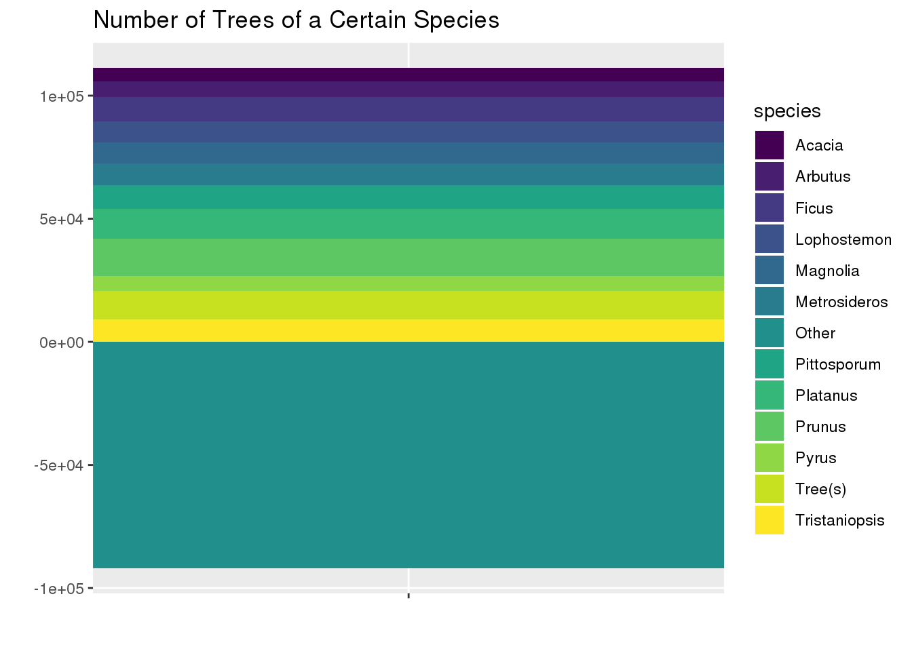
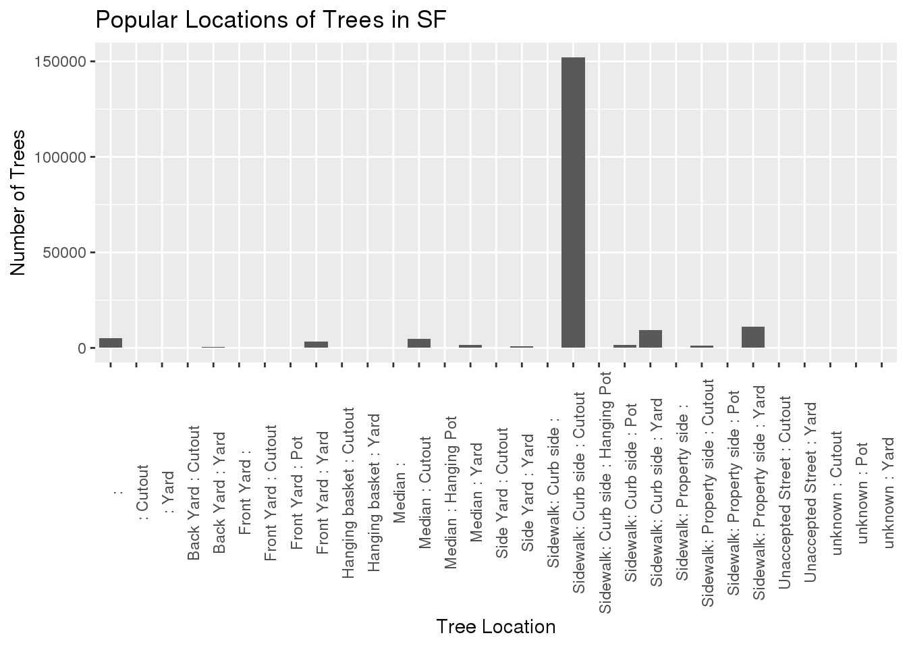

library(ggplot2)
library(dplyr)##
## Attaching package: 'dplyr'## The following objects are masked from 'package:stats':
##
## filter, lag## The following objects are masked from 'package:base':
##
## intersect, setdiff, setequal, unionlibrary(stringr)
library(tidyverse)## ── Attaching packages ─────────────────────────────────────── tidyverse 1.3.0 ──## ✓ tibble 2.1.3 ✓ purrr 0.3.3
## ✓ tidyr 1.0.0 ✓ forcats 0.4.0
## ✓ readr 1.3.1## ── Conflicts ────────────────────────────────────────── tidyverse_conflicts() ──
## x dplyr::filter() masks stats::filter()
## x dplyr::lag() masks stats::lag()library(here)## here() starts at /home/alcruzan/DASC-bloglibrary(patchwork)sf <- read.csv(here("tidytuesday-master", "data", "2020", "2020-01-28", "sf_trees.csv"))ggplot(sf, aes(x = longitude, y = latitude, color = caretaker)) +
geom_point(size = 0.001, alpha = 0.2) +
xlim(-122.36,-122.525) +
ylim(37.7,37.82) +
theme(legend.position = "none") +
xlab("Longitude") +
ylab("Latitude") +
ggtitle("Map of the Trees in San Francisco")## Warning: Removed 2963 rows containing missing values (geom_point).species_list <- sf %>%
mutate(species = word(species, 1, sep=" ")) %>%
separate_rows(species, sep = ' ') %>%
group_by(species) %>%
summarize(Count = n()) %>%
filter(Count >= 5000)
x <- 0
for (i in 1:12) {
x <- x + species_list[i,2]
}
z <- 19287 - x
species_list[nrow(species_list) + 1,] = c("Other", z)
ggplot(species_list, aes(x= "", y=Count, fill = species)) +
geom_bar(width = 10, stat = "identity") +
coord_polar("y", start = 0) +
xlab(" ") +
ylab(" ") +
ggtitle("Number of Trees of a Certain Species")
g1 <- ggplot(sf, aes(x= site_info)) +
geom_bar() +
theme(axis.text.x = element_text(angle = 90)) +
xlab("Tree Location") +
ylab("Number of Trees") +
ggtitle("Popular Locations of Trees in San Francisco")
g2 <- ggplot(sf, aes(x= site_info)) +
geom_bar() +
theme(axis.text.x = element_text(angle = 90)) +
ylim(0,12500) +
xlab("Tree Location") +
ylab("Number of Trees") +
ggtitle("Popular Locations of Trees in San Francisco (excluding sidewalk :curbside : cutout")
g1 /
g2## Warning: Removed 1 rows containing missing values (geom_bar).
today <- 2020
tree_age <- sf %>%
filter(!is.na(dbh)) %>%
mutate(age = substr(date, 1,4)) %>%
mutate(age = as.numeric(age)) %>%
mutate(age = today - age)
ggplot(tree_age, aes(x= site_info, y = dbh, size = age)) +
geom_point(position = "jitter", alpha = 0.05) +
facet_wrap(~cut_number(tree_age$dbh, 2)) +
theme(axis.text.x = element_text(angle = 90)) +
ylim(0,120) ## Warning: Removed 113369 rows containing missing values (geom_point).